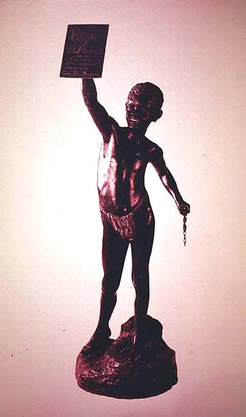

|
|  |
|
A. D. Bressac, Alegoria à lei do Ventre Livre, 1871
|
If anything, the monuments of the 'Old Republic' were even less 'popular' than their monarchist forerunners, which had occasionally turned to images of Afrobrazilians and Amerindians to illustrate the benign acts of the imperial state as a just and caring mediator between its subjects. This statue by the French sculptor Bressac celebrates the 'Law of the Free Womb' of 1871, which declared children born of slaves after that date to be free citizens. It would take another nineteen years until the final abolition of slavery.
|